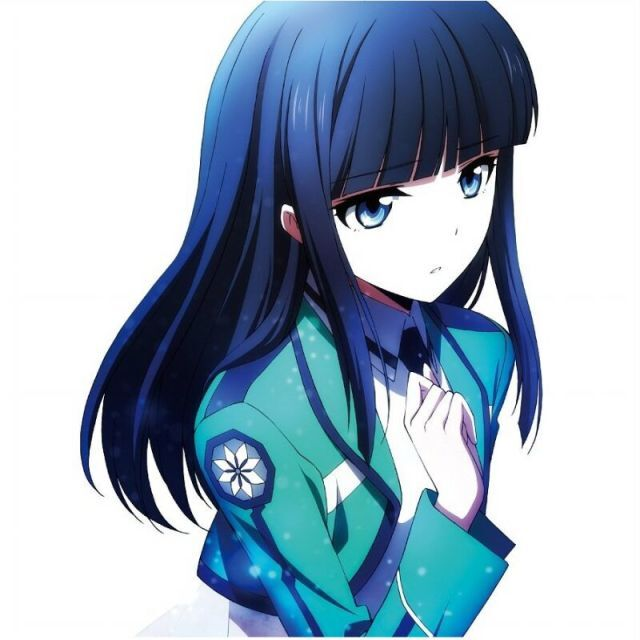
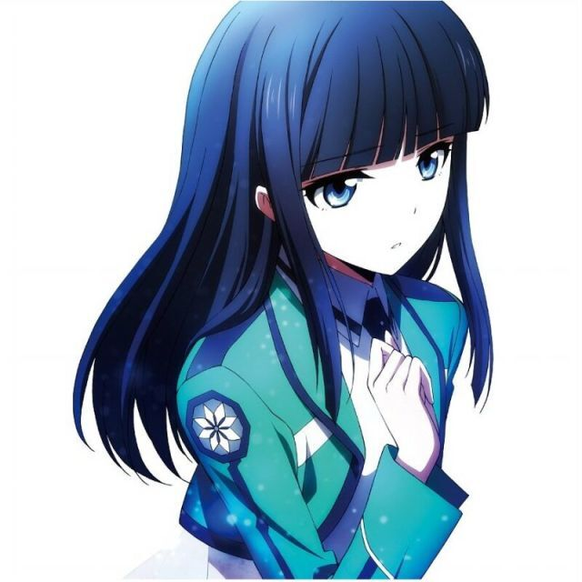
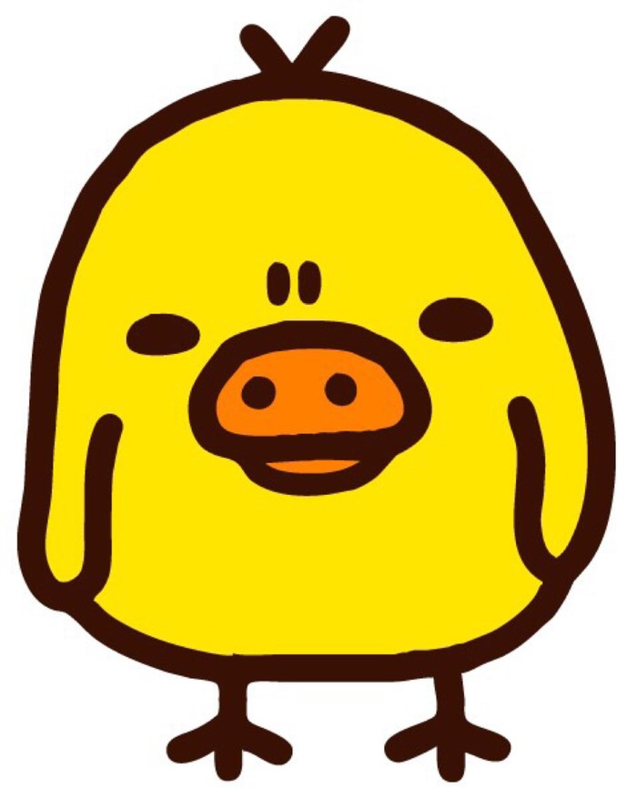
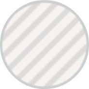
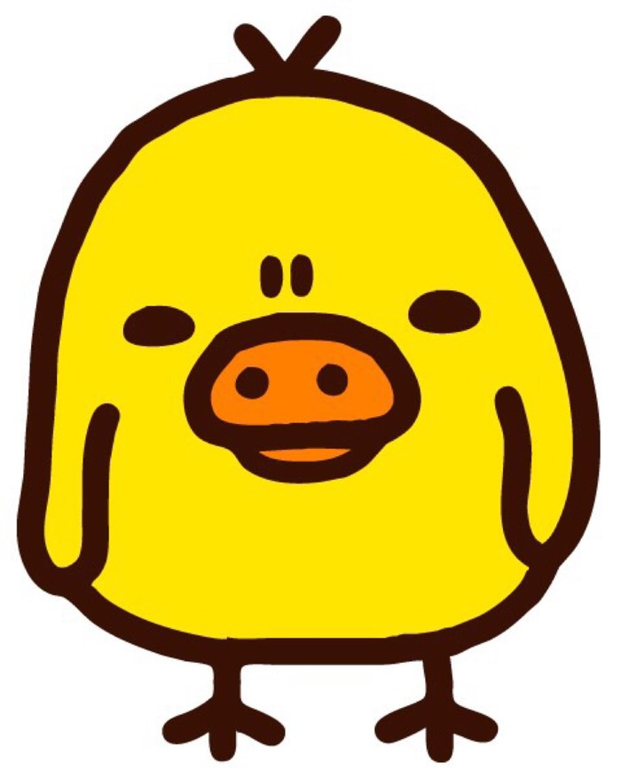
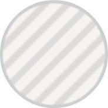

AXE-斧头
AXE-斧头
 

 



在这里简单介绍一下我们的团队。
队名的由来：
AXE是岚(Arathi)、西瓜君以及孤独方程(equationl)的缩写。当时是想，如果再招到其他人了，就换个名字，结果……并没有招到其他人QuQ。
岚的简介：
现阶段是个.NET码畜。平时喜欢玩艦これ啊SIF啊FGO啊之类的抽抽抽的游戏，以前还会玩DotA，但是现在不玩了； 喜欢学点新东西，使用新学的东西写点小代码，写完扔掉，挖坑无数，几乎不填…… 目前正在学习ASP.NET MVC，准备学习Unity3D，正在开发的项目有IronKanmulation和FreeRhythm。
西瓜君的简介：
深雪酱最萌了深雪酱最萌了深雪酱最萌了深雪酱最萌了深雪酱最萌了深雪酱最萌了深雪酱最萌了深雪酱最萌了深雪酱最萌了 深雪酱最萌了深雪酱最萌了深雪酱最萌了深雪酱最萌了深雪酱最萌了深雪酱最萌了深雪酱最萌了深雪酱最萌了深雪酱最萌了 深雪酱最萌了深雪酱最萌了深雪酱最萌了深雪酱最萌了深雪酱最萌了深雪酱最萌了深雪酱最萌了深雪酱最萌了深雪酱最萌了方程的简介：
汪汪汪汪汪汪汪汪汪汪汪汪汪汪汪汪汪汪汪汪汪汪汪汪汪汪汪汪汪汪汪汪汪汪汪汪汪汪汪汪汪汪汪汪汪汪汪汪汪汪汪汪汪汪 汪汪汪汪汪汪汪汪汪汪汪汪汪汪汪汪汪汪汪汪汪汪汪汪汪汪汪汪汪汪汪汪汪汪汪汪汪汪汪汪汪汪汪汪汪汪汪汪汪汪汪汪汪汪 汪够了，我就是equationl而你黄的简介：
前身是条硬件狗，奈何有颗墙头草的心，花样作死来了~花样作死来了~花样作死来了~花样作死来了~花样作死来了~花样作死来了~花样作死来了~花样作死来了~花样作死来了~花样作死来了~花样作死来了~花样作死来了~花样作死来了~花样作死来了~花样作死来了~花样作死来了~花样作死来了~花样作死来了~花样作死来了~花样作死来了~花样作死来了~花样作死来了~